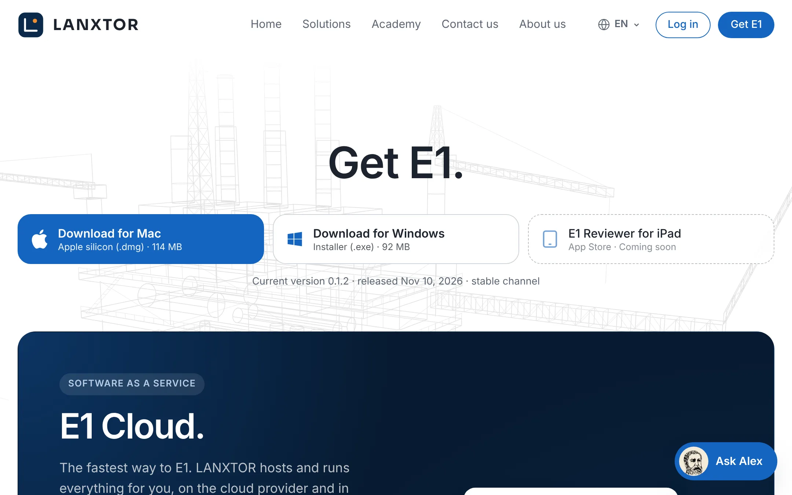

Academy / User guide / Installation and sign-in
2. Installation and sign-in
Open E1 in the browser or the desktop app, sign in with your company account or Microsoft, passkeys, sessions and the store E1 runs on.
About this guide
This guide covers how you get into E1: opening it in the browser or the desktop app, signing in with your company account or with Microsoft, passkeys and the "Confirm it is you" check, how long a sign-in lasts, trials, and how to see which store and cloud E1 runs on.
The usual order
- Open E1 in the browser or in the desktop app for Windows and macOS.
- Sign in, or sign in with your company's Microsoft account. On a new installation, the first sign-in claims it. If sign-in is refused, see When sign-in is refused.
- Add a passkey: it signs you in faster and is needed for administrator roles. Learn when E1 asks you to confirm it is you.
- Know how long a sign-in lasts and how to sign out, and what happens when a trial ends.
- Check which store E1 runs on in the status bar.
Before you start
You need the address of your E1 server (E1's own cloud is app.lanxtor.com) and an account with your organization's sign-in provider, or an invitation to E1.
Open E1 in the browser
E1 runs in the browser with nothing to install. Use it on any computer, on Linux and on tablets; the desktop app is for Windows and macOS.
- Where
- Your E1 server's address; for E1's cloud, app.lanxtor.com. On the website, the account page has Open E1 in the browser.
- Who
- Anyone with an E1 account
- Before you start
- Allow pop-ups for E1 if you want floating windows.
Steps
| # | Action | Expected result |
|---|---|---|
| 1 | Open your E1 server's address in the browser. | While E1 loads, a splash shows the LANXTOR E1 mark, a small flowing process line and "Loading". On a server with sign-in, the screen Sign in to E1 appears next. Otherwise E1 opens directly. |
| 2 | Sign in (see Sign in to E1). | E1 opens with your projects; the status bar shows Saved. |
| 3 | On the website account page, click Open E1 in the browser. | E1 opens at app.lanxtor.com. |

In the browser, floating windows open as pop-ups. Your appearance, panel widths and hidden panels are kept per browser; your tabs, selection and open rows are kept for you on the server.
The desktop app for Windows and macOS
E1 is a desktop app for Windows 10 or 11 (64-bit) and for Macs with Apple silicon (macOS 12 or newer). Both are signed (Windows by Lanxtor LLC, macOS by Lanxtor, LLC and notarized by Apple) and keep themselves up to date. Installers for Intel Macs and Windows on Arm follow; use E1 in the browser on those until then.
- Where
- Website → Get E1 → the download buttons at the top (Download for Mac, Download for Windows); account page → Downloads
- Who
- Anyone with an E1 account
- Before you start
- Windows 10 or 11 (64-bit), or a Mac with Apple silicon. Linux, Intel Macs and tablets use the browser.
Steps
| # | Action | Expected result |
|---|---|---|
| 1 | On the website, click Get E1. | Under "Get E1.", the buttons Download for Mac ("Apple silicon (.dmg) · 114 MB") and Download for Windows ("Installer (.exe) · 92 MB"); your own system first, in blue. Under them: "Current version 0.1.2 · released Nov 10, 2026 · stable channel". |
| 2 | Mac: click Download for Mac, open the .dmg and drag Lanxtor E1 into Applications; open it from there. | macOS may ask once whether to open an app downloaded from the internet; click Open. No warning about an unidentified developer. |
| 3 | Windows: click Download for Windows and run E1-Setup-0.1.2.exe. | It installs and starts Lanxtor E1. While the installer is new, Windows may show "Windows protected your PC": click More info; the publisher is Lanxtor LLC; click Run anyway. |
| 4 | At the first start, on Connect E1 to its server, click Use E1 Cloud. For your organization's own server, type its address under "or your organization's server" in Server address (for example https://e1.example.com) and click Connect. | "E1 keeps projects on a server: E1 Cloud, run by LANXTOR, or your organization's own. You sign in next." The app restarts on that server, remembers it, and shows the sign-in. |
| 5 | Sign in. | The same sign-in screen and the same account as in the browser; your projects are there. Floating windows are real windows and open again where they were at the next start. |
Wrong addresses are refused with "That is not an address. Enter one like https://e1.example.com.", "The address starts with https://." or "Use https:// for a server that is not on this computer."
The app's window title is "Lanxtor E1". On Windows the system menu bar hides itself; use E1's own menu bar inside the window. The plan is to sign in through your system browser; today the app shows the server's sign-in inside its own window. The app has no way yet to switch to another server after the first start.
Keep the desktop app up to date
The desktop app looks for a new version when it starts and every four hours, downloads it in the background and asks you to restart. You do not download installers again.
- Where
- A message from the app; the app menu → Check for Updates… (on a Mac: the E1 menu)
- Who
- Anyone using the desktop app, from version 0.1.2
- Before you start
- The desktop app installed (version 0.1.2 or newer; an older one is replaced once from the download page) and an internet connection
Steps
| # | Action | Expected result |
|---|---|---|
| 1 | Use E1 as usual. When a new version exists, wait until it is downloaded. | A message: "E1 ‹version› is ready", "Restart to update. Your projects are kept on the server. Later: E1 updates the next time you quit it.", with Restart Now and Later. |
| 2 | Click Restart Now. | E1 closes, updates and opens again on the same server; you may need to sign in again. |
| 3 | Or click Later and go on working. | Nothing changes now. E1 updates when you quit it, and the next start is the new version. |
| 4 | To look at once: open the app menu (on a Mac the E1 menu) and click Check for Updates…. | "E1 is up to date" with your version, or "Downloading E1 ‹version›" and later the message of step 1. Without a connection: "E1 could not check for updates". |
Test builds and releases are separate: an app installed from a test build gets the next test build, an app installed from the download page gets the next release.
Sign in to E1
On a server with sign-in, E1 shows its sign-in screen until you sign in. You sign in with your organization's account on its sign-in page; E1 stores no passwords. The first time, signing in creates your account and a personal workspace.
- Where
- The screen Sign in to E1, shown instead of the app
- Who
- Anyone with an account at the installation's sign-in provider (on E1's cloud: a LANXTOR E1 account, made with email and password or a one-time code)
- Before you start
- Your email address is verified at the sign-in provider.
The sign-in screen
- The heading Sign in to E1 and "Sign in with your organization's account. New here? Signing in creates your account and a personal workspace."
- Sign in: goes to the sign-in provider and back into E1.
- Sign in with your company's Microsoft account: only where the server has Microsoft connected. See Sign in with Microsoft.
- Sign in with a passkey: only where the browser supports passkeys. See Passkeys.
- A problem shows in red above the buttons.
- On the left, the LANXTOR E1 panel; under the buttons, the address of the server you are signing in to. On a narrow window the panel is above the buttons.
Steps
| # | Action | Expected result |
|---|---|---|
| 1 | Open E1 on a server with sign-in. | The screen Sign in to E1 with the Sign in button appears. |
| 2 | Click Sign in. | The sign-in provider's page opens (on app.lanxtor.com: Microsoft's sign-in page for LANXTOR E1). |
| 3 | Sign in there. | You are back in E1 with your projects. On E1's cloud the status bar shows Microsoft Azure at the bottom right. |
| 4 | Click your initial at the bottom of the left rail. | The Account tab shows your name, email and organization. |
| 5 | Sign in for the first time with a new address. | E1 creates your account with a personal workspace and opens it. |
| 6 | Sign in with a personal address, for example at Gmail. | Refused: E1 is for companies: sign in with your company email address. … (Blocked email domains). |
There is no picture of the sign-in screen in this guide yet. A sign-in you start must be finished within 10 minutes; after that E1 says "The sign-in expired or was started elsewhere. Try again." Your name and picture come from the sign-in provider each time you sign in.
Sign in with your company's Microsoft account
Where your company has connected its Microsoft accounts (Microsoft Entra ID) to E1, you sign in with your work account and land straight in your company's organization.
- Where
- Sign-in screen → Sign in with your company's Microsoft account (with the Microsoft logo)
- Who
- People whose email domain is one of the company's domains in E1
- Before you start
- LANXTOR has connected your company's directory (its tenant, its email domains and the default license). Your company's IT may first have to allow E1 once.
Steps
| # | Action | Expected result |
|---|---|---|
| 1 | Open E1. | The sign-in screen shows Sign in with your company's Microsoft account under Sign in. If the button is missing, the server has no Microsoft connection. |
| 2 | Click it. | Microsoft's page asks you to pick an account. |
| 3 | Pick your work account. | You are back in E1, a member of your company's organization. An E1 account you already had with the same address is linked to it, but only when Microsoft confirms that your company's directory has verified it owns the address's domain; otherwise the sign-in is refused (see below). |
| 4 | Open Account from the left rail. | Your access shows the license, if a seat was free; otherwise "None assigned · Without a license you can only view. An administrator assigns one." |
Messages you may see
- "Your company has not connected its Microsoft accounts to E1 yet. Ask your E1 administrator, or write to sales@lanxtor.com."
- "Sign in with your organization email address. This Microsoft account is not one of its domains in E1."
- "Your access to organization in E1 was removed. Ask its E1 administrator."
- "Your company's Microsoft administrator has to allow E1 once before people can sign in with it."
- "Microsoft did not say which company account this is. Try again."
- "Signing in with a Microsoft company account is not set up here."
- "An E1 account with the address email already exists, and your company's Microsoft directory has not verified that it owns that domain, so E1 cannot connect the two. Sign in the way you used before, or ask your E1 administrator."
For your company's Microsoft administrator: add the optional claim xms_edov to the ID token of E1's app registration. Without it Microsoft does not say whether the domain is verified, so an existing E1 account is never linked by its email address, and such sign-ins are refused.
Owners and Administrators still need a passkey before their role takes effect. Sign-in with SAML and automatic directory sync (SCIM) come later; see Company single sign-on. There is no review check for Microsoft sign-in yet.
Claim a new installation
A new E1 server with sign-in has no owner. The first installation operator who signs in claims it: its projects, chat and settings become theirs, and they become its owner. Nobody else can claim it.
- Where
- Sign-in screen → Sign in
- Who
- Only a person whose email address is in the server's list of installation operators (the setting
E1_OPERATORS), normally whoever set up the server - Before you start
- Nobody has claimed this installation yet. Whoever set up the server has put your email address in
E1_OPERATORSand restarted it.
Steps
| # | Action | Expected result |
|---|---|---|
| 1 | Open E1 on the new installation. | The normal sign-in screen with Sign in. It does not say whether the installation has an owner. |
| 2 | Click Sign in and sign in with an address listed in E1_OPERATORS. | E1 opens with the installation's projects, which are now yours. |
| 3 | On another installation that nobody has claimed, sign in with an address that is not in the list. | The installation is not claimed: you sign in as anyone else would (for example with an invitation), and its projects are not yours. |
As the owner, add a passkey straight away: without one you act as a Member, not as the Owner.
With E1_OPERATORS empty, a production server lets nobody claim the installation and writes in its log how to set it. Only a development or test server still lets the first person who signs in claim it.
When sign-in is refused
If E1 cannot let you in, you are back on the sign-in screen with the reason in red. This section lists the messages and what to do.
- Where
- The sign-in screen, above the buttons
- Who
- Everyone signing in
- Before you start
- —
Messages
| Message | What to do |
|---|---|
| "Verify your email address with the sign-in provider first, then sign in again." | Confirm your address with the sign-in provider (for example from its email), then sign in again. |
| "E1 is open by invitation only for now. Ask LANXTOR for an invitation, then sign in with the invited email address." | Ask for an invitation and sign in with exactly the invited address. |
| "This email address already has an account with another sign-in method." | Sign in the way you did before, for example with Microsoft. |
| "This email address cannot be used with E1. If you think this is a mistake, write to sales@lanxtor.com." | The address's domain is blocked for E1. Write to sales@lanxtor.com. |
| "Your account belongs to no organization." | Ask your E1 administrator. |
| "The sign-in was cancelled." | Start again. |
| "The sign-in expired or was started elsewhere. Try again." | Start again and finish within 10 minutes, in the same browser. |
| "The sign-in could not be completed. Try again." | Try again; if it repeats, tell your E1 administrator. |
| "An E1 account with the address email already exists, and your company's Microsoft directory has not verified that it owns that domain, so E1 cannot connect the two. Sign in the way you used before, or ask your E1 administrator." | Sign in the way you did before. Your company's Microsoft administrator can add the optional claim xms_edov to E1's app registration (see Sign in with Microsoft). |
| "All N License seats are taken. Ask the person who invited you to free a seat or add seats, then open the invitation again." | Your invitation stays open. Ask whoever invited you to free or add a seat, then open the link again (see Invite a colleague). |
Steps
| # | Action | Expected result |
|---|---|---|
| 1 | Click Sign in, then cancel on the provider's page. | You are back on the sign-in screen with "The sign-in was cancelled." in red. |
| 2 | Sign in with an account whose email is not verified. | "Verify your email address with the sign-in provider first, then sign in again." |
For the messages of Sign in with Microsoft, see Sign in with Microsoft; for passkeys, see Passkeys.
Passkeys
A passkey signs you in with this device's screen lock or a security key, confirms important actions, and is needed before an Owner, Administrator or Project administrator role takes effect. Every use of a passkey asks for your screen lock, PIN or fingerprint or face: touching a key alone is not enough.
- Where
- Left rail → your initial → Account → Passkeys; sign-in screen → Sign in with a passkey
- Who
- Everyone signed in on a server with sign-in
- Before you start
- You signed in less than 15 minutes ago (otherwise E1 asks you to confirm it is you first); your device has a screen lock or you have a security key with a PIN or fingerprint.
Steps
| # | Action | Expected result |
|---|---|---|
| 1 | Open Account and find Passkeys. | The card explains what a passkey does. With none yet: "You have no passkey yet." |
| 2 | Type a name in Passkey name (placeholder "Name, for example Work laptop", up to 60 characters). | The name is in the field. |
| 3 | Click Add a passkey and complete the browser's or system's prompt with your screen lock. | "Passkey added." The list shows the name with "Added date · last used date". If you cancel the prompt: "No passkey was added." |
| 4 | More than 15 minutes after signing in, click Add a passkey. | The dialog Confirm it is you opens first: "Confirm it is you to add a passkey: use your passkey or sign in again." Confirm with a passkey you already have, or Sign in again (for your first passkey), then click Add a passkey once more. If you cancel: "No passkey was added." |
| 5 | Sign out, then on the sign-in screen click Sign in with a passkey and confirm with your screen lock. | E1 opens, signed in. Cancelled: "The sign-in was cancelled." Failed: "The passkey could not be used: …". |
| 6 | In Passkeys, click Remove next to a passkey and confirm "Remove the passkey name?". | "Passkey removed." If your sign-in is older than 15 minutes, E1 first asks you to confirm it is you; if you cancel, "The passkey was kept." |
Adding a passkey does not count as confirming it is you: an action that asks for it still asks after you added one.
Without a passkey, an Owner or Administrator acts as a Member, and a Project administrator acts as a Lead engineer. Your access then shows "acts as role until you add a passkey". Refusals add: "Your Owner role needs a passkey: add one under Account → Passkeys (your initial at the bottom of the left rail)."
Confirm it is you
For important actions E1 wants a recent sign-in. If you signed in or last confirmed more than 15 minutes ago, it asks you to confirm it is you with your passkey or by signing in again.
- Where
- The dialog Confirm it is you, opened by the action
- Who
- Whoever starts one of the actions below
- Before you start
- Best with a passkey; without one you sign in again.
Actions that ask
- Exporting the whole organization (File → Organization… → Export → Export everything…)
- Giving or removing Owner, Administrator or Library administrator
- Removing a member who is Owner, Administrator or Library administrator
- Changing an organization policy
- Deleting a project
- Adding or removing a passkey
- Exporting a restricted project
Steps
| # | Action | Expected result |
|---|---|---|
| 1 | More than 15 minutes after signing in, as an Owner with a passkey, choose File → Organization… → Export and click Export everything…. | The dialog Confirm it is you opens: "Confirm it is you to export the whole organization: use your passkey or sign in again." with Cancel, Sign in again and Use passkey. |
| 2 | Click Use passkey and confirm with your screen lock. | The dialog closes and the export starts ("Writing the archive…"). |
| 3 | Start the export again within 15 minutes. | No dialog: the export starts at once. |
Use passkey is shown only if you have a passkey. If the passkey does not match: "That passkey did not confirm it is you. Try again, or sign in again." Adding a passkey does not count as confirming.
Session length, sign out and switching organization
A sign-in lasts 12 hours, unless your installation sets another length. Then E1 shows the sign-in screen again. You can sign out yourself, and switch between the organizations you belong to.
- Where
- Account → Session → Sign out; explorer header → organization name → Switch organization ▸
- Who
- Everyone signed in
- Before you start
- You are signed in on a server with sign-in.
Steps
| # | Action | Expected result |
|---|---|---|
| 1 | Open Account from the left rail and click Sign out in the Session card. | The sign-in screen Sign in to E1 appears. |
| 2 | Sign in again and click the organization name in the explorer header. | A menu with New project, New folder, Query ▸ and Switch organization ▸. |
| 3 | Open Switch organization ▸. | Your organizations are listed; the current one reads "✓ name" and cannot be chosen. With no other: "You belong to no other organization". |
| 4 | Choose another organization. | E1 reloads in that organization; the explorer header shows its name. |
| 5 | More than 12 hours after signing in, reload E1. | The sign-in screen appears again. |

On an installation served over https, the sign-in cookies got new names on 2026-11-08: everyone is signed out once after that release and simply signs in again.
Sign out is protected against other sites: a page outside E1 cannot sign you out. If signing out is refused with "The request did not come from E1. Reload the page.", reload E1 and sign out again.
E1 does not yet sign you out after a time without activity; only the 12-hour limit applies. An idle timeout set by the organization is planned.
One person per account
An E1 license is for one named person, and every change and approval is recorded under that person's name. When your account is open on another computer, E1 asks you to sign out there or here. E1 on a computer and E1 Reviewer for iPad may be open at the same time.
- Where
- A dialog when E1 starts, or when you come back to its window
- Who
- Everyone signed in
- Before you start
- E1 with sign-in. A computer counts while E1 was used there in the last 15 minutes.
Steps
| # | Action | Expected result |
|---|---|---|
| 1 | Sign in to E1 on a second computer with the same account, while E1 is open on the first. | A dialog Your account is open on another computer says, for example, It is also open in Chrome on Windows, last used 3 minutes ago. and One person per account: E1 licenses are for one named person. It has no Close button: you choose. |
| 2 | Click Sign out there and continue here. | The other computer is signed out, and you work on here. When someone comes back to E1 on the other computer, it shows the sign-in screen. |
| 3 | Or click Sign out here. | This computer is signed out and shows the sign-in screen; the other one goes on. |
LANXTOR sees accounts used from two places at once. A shared account also breaks your own company's four-eyes approval and history, because everything is recorded under one name.
AI credits this month
Each license includes AI credits a month for Alex: 300 with Editor Basic and with Reviewer, 2,000 with Editor Pro. A University class shares one pool: 300 for each Editor. The credits start again on the first day of each month (UTC).
- Where
- Account → Your access, and File → Organization… → Members
- Who
- Everyone with Alex in a Standard, Professional or University organization. A trial has its own limits; an Enterprise contract sets its own.
- Before you start
- E1 with sign-in.
Steps
| # | Action | Expected result |
|---|---|---|
| 1 | Open Account → Your access. | It reads, for example, AI credits this month: 120 of 300. They start again on 1 December. In a University organization: Your class’s AI credits this month: 120 of 900 (300 for each Editor). |
| 2 | Ask Alex when the credits are used up. | Alex says, for example, You have used this month's AI credits included in your Editor Basic license (300 of 300). They start again on 1 December; everything else goes on. Viewing, editing by hand and export go on. |
A reply that has started is finished, so the credits used can go a little past the limit by that one reply.
The 30-day trial
A trial gives you an organization of your own, with you as its owner, for 30 days. When it ends, the organization becomes read-only: everything stays visible and can be exported.
- Where
- Website → Get E1 → Start your free trial (the sign-up page), or an invitation LANXTOR sends you
- Who
- Anyone LANXTOR invites to a trial
- Before you start
- Accept the invitation within 14 days and sign in with the invited email address.
What a trial includes
- 5 Editor licenses (one is yours), 5 Reviewer licenses and as many Viewers as you like.
- Students at a recognised school or university get Editor Pro free for 3 months.
- 18 000 AI credits, with a daily limit per person (Editor 600, Reviewer 150).
- 5 GB of files. Kept export results (for 7 days) and the PDFs of issued revisions count toward it too.
- Premium AI models are "Not included in a trial."
Steps
| # | Action | Expected result |
|---|---|---|
| 1 | Open the invitation link and sign in with the invited address. | E1 opens in your new organization; you are its owner. |
| 2 | Choose File → Organization…. | The Members tab shows "Trial until date." |
| 3 | After the trial ended, change anything, for example rename a project. | Refused: "The trial of this organization ended on date, so it is read-only now: everything can still be viewed and exported. Contact LANXTOR to continue." |
| 4 | Open Account. | A note: "The trial of this organization has ended: everything is read-only, and can still be viewed and exported." |
After the end, the Organization dialog's trial line turns red and everyone works like a Viewer. LANXTOR lifts the lock when a contract is in place. There is no review check for an ending trial yet.
Which store and cloud E1 runs on
The right end of the status bar names where your projects are kept: E1's cloud on Microsoft Azure, a PostgreSQL database, or a local file. Check it when you are not sure which installation you are in.
- Where
- Status bar, far right
- Who
- Everyone
- Before you start
- E1 is open.
What it can say
| Label | Meaning (hover text) |
|---|---|
| Microsoft Azure · version | E1's cloud: "Stored in the cloud on Microsoft Azure; this server runs commit …". Without a version it reads just Microsoft Azure. |
| PostgreSQL on this computer | A database on your own computer, the same kind of store as the cloud. |
| PostgreSQL · host | A PostgreSQL database on another server, for example your company's. |
| A file name such as data/db.json | A local file: "JSON file (…), chosen with E1_STORE=json or E1_DB. Not the store the cloud runs on." Used for trying E1 out and for tests; there is no sign-in. |
Steps
| # | Action | Expected result |
|---|---|---|
| 1 | Sign in at app.lanxtor.com and look at the bottom right. | The status bar reads Microsoft Azure · followed by a short version code. |
| 2 | Hover the label. | The hover text explains where the projects are stored. |

E1's reference cloud
E1's own cloud on Microsoft Azure (app.lanxtor.com) is the reference installation that customers and reviewers use. Nothing needs installing: open it in the browser and sign in.
- Where
- app.lanxtor.com
- Who
- Everyone with an E1 cloud account
- Before you start
- —
What you can do
- Open https://app.lanxtor.com and sign in with your LANXTOR E1 account or your company's Microsoft account.
- Check in the status bar (bottom right) that you are on it: Microsoft Azure.
Still planned (roadmap M4.16 "Pilot readiness: the second cloud"). A second cloud (Google Cloud, EU) from the same images, for customers who need it.
Company single sign-on and directory sync
Beyond Sign in with Microsoft, E1 is to work with other company sign-in systems and keep its members in step with the company directory.
- Where
- Not on screen yet
- Who
- Companies with their own sign-in system
- Before you start
- —
Planned (roadmap 09.4 "Company single sign-on and directory sync", in the parallel track). Its first part, Sign in with Microsoft, was delivered on 2026-11-07; the stage stays open for the rest.
What you will be able to do
- Sign in with your company's SAML sign-in.
- Have people added to and removed from your organization automatically from the company directory (SCIM).